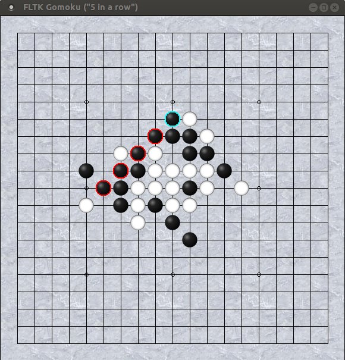

A minimal implementation of the "5 in a row" game.
v1.0 15/12/2017

Requires FLTK 1.3 or above.
Set pieces alternately (against the computer) on a 19x19 grid board.
The first one to get exactly (means: not more than) five pieces in a row of any direction (horizontal, vertical or diagonal) wins the game.
This program currently offers only a very simple move algorithm without levels. Nevertheless it doesn't play too bad...
It features a resizable graphical board with an optional
background (tiled) image (if supplied as bg.gif in the
current directory) and pieces drawn from SVG images (needs FLTK 1.4!).
For cheating moves can be undone with the BackSpace key.